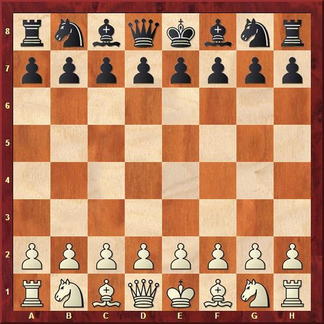

Ша́хматы (перс. شاه مات ‘шах мат’, буквальный перевод «шах умер»[4]) — настольная логическая игра с шахматными фигурами на 64-клеточной доске, сочетающая в себе элементы искусства (в том числе в части шахматной композиции), науки и спорта[5].
Форматы игры
В шахматы обычно играют два игрока (именуемые шахматистами) друг против друга. Также возможна игра одной группы шахматистов против другой или против одного игрока, такие партии зачастую именуются консультационными. Кроме того, существует практика сеансов одновременной игры, когда против одного сильного игрока играет несколько противников, каждый на отдельной доске.

Стартовая позиция